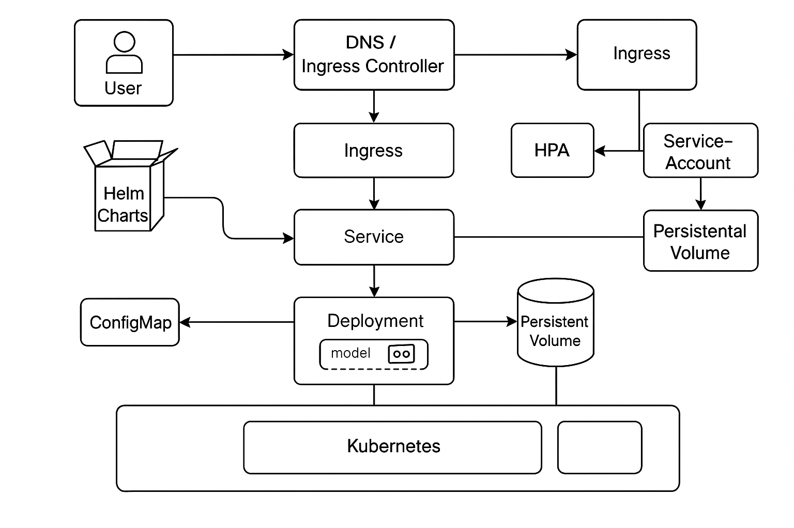

About Me
Hello! I’m Bhanu Prakash Vangala, a Ph.D. researcher in Computer Science at the University of Missouri.
My research focuses on advancing trustworthy and reliable AI, with an emphasis on large language models (LLMs), scalable systems, and scientific discovery. I began my graduate journey at Mizzou, completing my M.S. in Computer Science here while designing robust frameworks for deploying LLMs on distributed and high-performance computing environments — work that naturally evolved into my doctoral research.
Supported by the Department of Defense, NSF, and NASA, my work addresses one of the most critical questions in AI today: How can we build systems that not only generate knowledge but also justify and verify their outputs?
I am passionate about mentoring students, writing about graduate life abroad, and building tools that make AI systems more interpretable, reproducible, and aligned with human values — a vision that guides every aspect of my research.
- Trustworthy and Interpretable AI
- Efficient and Scalable Language Models
- Factuality and Evaluation
- AI for Scientific Discovery
Developing AI systems that do more than generate fluent outputs — they can reason transparently, explain their decision processes, detect inconsistencies, and actively self-correct. My work focuses on designing architectures and evaluation frameworks that empower models to justify their responses, ultimately fostering greater trust and adoption of AI in critical domains like science, healthcare, and law.
Pushing the boundaries of large-scale AI deployment through model compression, distributed training optimization, and advanced memory management. I design scalable architectures and Helm-based deployment pipelines that make state-of-the-art language models accessible to researchers and practitioners without requiring massive infrastructure investments, enabling equitable and practical use of cutting-edge AI technologies.
Creating robust benchmarks and advanced evaluation pipelines to rigorously measure the factual consistency, reliability, and safety of language model outputs. By integrating contradiction detection graphs, retrieval-augmented checks, and semantic consistency metrics, I ensure that AI systems can be trusted in settings where accuracy is paramount and errors carry significant real-world consequences.
Leveraging the power of LLMs and multimodal AI to accelerate research in materials science, biomedical innovation, and policy modeling. My work enables domain scientists to harness AI as a collaborative partner — not only to analyze and generate data, but to form hypotheses, validate findings, and drive scientific breakthroughs with greater efficiency and confidence.
Thanks for stopping by—feel free to explore my work on GitHub or connect with me on LinkedIn!
🔥 News
- 2025.05: 🎓 Earned my M.S. in Computer Science (GPA: 4.0/4.0) from the University of Missouri, Columbia.
- 2025.04: 🏆 Received the Outstanding Master’s Student Award from the MU Department of Computer Science.
- 2025.04: 📤 Submitted a thesis proposal: “Trustworthy AI: Building Self-correcting and Self-evolving Models for Scientific Discovery.”
- 2025.04: 🎉 Presented our work on Hallucination Detection at AAAI Spring Symposium 2025 on AI for Scientific Discovery track
- 2025.03: Started development of ReflectMemory, focused on persistent memory control for long-context LLM reasoning.
- 2025.03: Deployed updated KubeLLM framework for multi-tenant LLM inference on GPU-based HPC clusters.
- 2025.02: 🥈 Achieved Runner-Up in the MUIDSI School for Generative AI for Social Good hackathon on VisionAI for Visually Impaired project.
- 2025.01: Released benchmarking tools for hallucination detection in scientific LLMs, supporting hybrid evaluation methods.
- 2024.09: Initiated documentation work on scalable LLM-as-a-Service infrastructure using Helm charts and node affinity scheduling.
- 2024.01: Working as a TA for over 100 students in a web development course – guiding full-stack app development.
- 2023.12: Led deployment of GPU-efficient LLM inference systems in the university’s Kubernetes-based HPC environment (Nautilus).
- 2023.08: Began research on faithfulness, interpretability, and robustness in large generative language models.
- 2023.06: 🎉 Admitted to the Ph.D. program in Computer Science at the University of Missouri.
- 2023.05: Graduated with a B.Tech in CSE (Data Analytics) from VIT Vellore.
- 2023.04: 🏅 Honored with the Excellence in Research Award at VIT for multilingual NLP and social media analytics contributions.
- 2023.03: Volunteered as an AI Community Evangelist at Adobe, contributing to community education and developer engagement.
- 2022.11: Served as an Internshala Student Partner (ISP), leading brand campaigns and peer mentoring on campus.
- 2020: Joined the Brandiverse team as a creative contributor, working on outreach and media strategy.
- 2021: Collaborated with the Synergy Team at VIT, supporting student experience initiatives and university development programs.
Publications

HalluMat: Hallucination Detection in Scientific LLMs
Bhanu Prakash Vangala, Jianlin Cheng
- A hybrid evaluation pipeline combining intrinsic and extrinsic techniques to flag hallucinations in domain-specific outputs.
- Applied to biomedical and scientific text generation tasks.
[abstract]
Artificial Intelligence (AI), particularly Large Language Models (LLMs), is transforming scientific discovery, enabling rapid knowledge generation and hypothesis formulation. However, a critical challenge is hallucination, where LLMs generate factually incorrect or misleading information, compromising research integrity. To address this, we introduce HalluMatData, a benchmark dataset for evaluating hallucination detection methods, factual consistency, and response robustness in AI-generated materials science content. Alongside, we propose HalluMatDetector, a multi-stage hallucination detection framework integrating intrinsic verification, multi-source retrieval, contradiction graph analysis, and metric-based assessment to detect and mitigate LLM hallucinations. Our findings reveal that hallucination levels vary significantly across materials science subdomains, with high-entropy queries exhibiting greater factual inconsistencies. By utilizing HalluMatDetector’s verification pipeline, we reduce hallucination rates by 30% compared to standard LLM outputs. Furthermore, we introduce the Paraphrased Hallucination Consistency Score (PHCS) to quantify inconsistencies in LLM responses across semantically equivalent queries, offering deeper insights into model reliability. Combining knowledge graph-based contradiction detection and fine-grained factual verification, our dataset and framework establish a more reliable, interpretable, and scientifically rigorous approach for AI-driven discoveries.

HalluFormer: Faithfulness Evaluation Framework
Bhanu Prakash Vangala, Jianlin Cheng
- Transformer-based architecture for multi-dimensional consistency checking of LLM outputs.
[abstract]
Despite the impressive performance of Large Language Models (LLMs) in a variety of natural language processing tasks, they are still prone to producing information that is factually inaccurate, known as hallucination. In critical fields related to scientific and clinical domains that demand highly precise answers, the negative effect of this phenomenon is even more pronounced. To address this problem, we formulate the hallucination detection problem as a classification problem of assessing the consistency between questions, answers and retrieved knowledge contexts and propose HalluFormer, a transformer-based model for detecting hallucinations of LLMs. HalluFormer was trained and tested on the MultiNLI dataset. It achieves an F1 score of 0.9471 on the MultiNLI test dataset. On the blind ANAH test dataset, it achieves an F1 score of 0.7285, indicating it can generalize reasonably well to completely new data. The results demonstrate that transformer-based methods can be utilized to detect hallucinations of LLMs, paving the way for further research on improving the reliability of LLMs.

Deploying LLM-as-a-Service in Kubernetes HPC Clusters
Bhanu Prakash Vangala, Grant Scott, Jianlin Cheng
- Designed a Helm-based GPU-aware deployment pipeline for LLM inference in research clusters.
[abstract]
This work focuses on scalable and efficient deployment strategies for large language models in high-performance computing (HPC) environments. It outlines a Helm-chart-based approach for deploying containerized models with GPU affinity scheduling, resource throttling, and multi-user access configurations.

Brain Tumor Detection in MRI Images
Bhanu Prakash Vangala
- Built a CNN-based pipeline to classify MRI scans into normal and tumor-positive cases.
- Used preprocessed image datasets and trained on Google Colab with Keras/TensorFlow.
[abstract]
Abstract—This study presents a comprehensive approach to detecting brain tumors using deep learning algorithms implemented in TensorFlow. The project develops two distinct convolutional neural network (CNN) models— a custom-designed CNN and the pre-trained ResNet50V2— to identify and classify brain tumor presence from MRI images across two datasets. Both models underwent rigorous training, evaluation, and optimization to enhance their accuracy and generalization capabilities. The custom CNN model included data augmentation techniques like random flipping, rotation, and zooming to reduce overfitting and improve model robustness. The performance of each model was meticulously analyzed through metrics such as accuracy, precision, recall, and F1-score, with results visualized using confusion matrices and performance charts. Additionally, learning rate optimization was performed to find the most effective training parameters. The study not only demonstrates the potential of neural networks in medical imaging diagnostics but also explores the effectiveness of model customization and transfer learning for practical applications in healthcare.

Pneumonia Detection in Chest X-rays Using Deep Learning
Bhanu Prakash Vangala
- Applied CNN models to classify chest X-rays for pneumonia diagnosis.
- Trained on Kaggle datasets using transfer learning (ResNet, VGG).
[abstract]
Abstract—Pneumonia is a leading cause of morbidity worldwide, necessitating prompt and accurate diagnosis to improve patient outcomes. This study leverages deep learning techniques to automate the detection of pneumonia from chest X-ray images. Five models are evaluated, including a custom Convolutional Neural Network (CNN), ResNet18, VGG16, ResNet50 with K-Fold Cross-Validation, and EfficientNet. Pretrained architectures are fine-tuned on the publicly available Chest X-Ray Pneumonia dataset, with 5,216 training images, and validated using precision, recall, F1-score, and ROC-AUC metrics. Innovative training strategies such as K-fold cross-validation and multi-GPU acceleration are employed to enhance model robustness. Among the models, EfficientNet achieves the highest classification performance, demonstrating the effectiveness of state-of-the-art architectures in medical image classification tasks. The results suggest that deep learning models can offer a reliable, scalable solution for pneumonia detection, paving the way for integration into clinical workflows to assist radiologists in diagnostic decision-making.

Bhanu Prakash Vangala
- Developed a deep learning model to convert grayscale images to color.
- Used convolutional autoencoders and GAN-based architectures for photorealistic results.
[abstract]
Colourization is a PC helped procedure of adding shading to a monochrome picture or film. The procedure involves typically segmenting pictures into areas and following these regions across picture sequences. Neither of these undertakings can be performed dependably by and by; thus, colourization requires extensive user mediation and remains a monotonous, tedious, and costly assignment. Colourization is a term presented by Wilson Markle in 1970 to describe the PC helped process he developed for including shading. Colourizing black and white movies is an old idea going back to 1902. For a considerable length of time, numerous filmmakers restricted colourizing their black and white motion pictures and considered it vandalism of their craft. Today it is acknowledged as an upgrade to the artistic expression. The innovation itself has moved from meticulous hand colourization to the present largely automated strategy. In India, the film Mughal-e-Azam, a blockbuster released in 1960 was remastered in color in 2004. People from different ages crowded the theatres to see it in color, and the movie was a huge hit for the second time!

KOO: Uncovering User Sentiments and Trends!
Bhanu Prakash Vangala
- Developed a multilingual sentiment analysis system for KOO, leveraging NLP and machine learning to analyze user sentiment across various languages.
- Provided real-time sentiment insights for improved user experience and content moderation on the social networking platform.
[abstract]
A multilingual sentiment analysis pipeline delivering real-time user sentiment trends on KOO to aid content moderation and enhance engagement.
Projects
-
ReflectMemory for Self-Correcting LLMs
Built a memory module to store chain-of-thought embeddings and ensure reasoning consistency across inference rounds. -
KubeLLM: LLM-as-a-Service Platform
Deployed a scalable, GPU-optimized LLM inference service using Kubernetes, Helm, and horizontal pod autoscaling. -
HalluMat & HalluFormer
Developed benchmarking and evaluation pipelines for hallucination detection in scientific LLMs. -
ChatMed: Medical Chatbot for Health Guidance
Trained using BioGPT and PubMed literature to provide symptom-based support and healthcare guidance. -
CropInsight: AI for Agriculture
Combined computer vision and LSTM-based sequence modeling to analyze crop health and yield forecasts. -
Hackathon Projects @ Mizzou
Runner-up for building a real-time LLM hazard indicator tool, VisionAI for visually impaired users. -
SocialSift: Crisis-aware Sentiment Analysis
Used multilingual transformers to analyze real-time sentiment from social media during natural disasters. -
EmotionSense: Multi-modal Mental Health Model
Built using text, audio, and facial signals to predict mental health markers like anxiety or depression.
Honors and Awards
-
2025.05: Outstanding Master’s Student Award, College of Engineering, [University of Missouri](https://engineering.missouri.edu/departments/eecs/eecs-research/)


-
2025.03: Runner-Up – MUIDSI Hackathon for VisionAI: AI-Powered Assistance for the Visually Impaired, awarded $1,000


- 2025.04: Selected for Google PhD Fellowship Nomination, one of three [University of Missouri](https://engineering.missouri.edu/departments/eecs/eecs-research/) nominees
- 2023: Dean’s Research Excellence Award, [Vellore Institute of Technology](https://vit.ac.in/schools/school-of-computer-science-and-engineering-for-ug-courses) (VIT)
- 2023: Best Department Thesis Award, VIT for B.Tech thesis on multilingual sentiment analysis
- 2022: Runner-Up, VIT AI Tech-Thon
- 2020: Certificate of Outstanding Achievement, Data Analyst Intern at Brandiverse
- 2019–2023: Multiple Academic Merit Scholarships and recognitions as Internshala Student Partner (ISP) and Synergy Team Lead, VIT
-
"Vertical tabbed interface", also known as "vertical tabs".
Tabs component: divides content into panels navigated by tab labels.
Vertical tabs: labels are arranged on the side rather than across the top.
Active tab content area: displays the details of the selected tab.
Alternative names: Side navigation tabs, Sidebar tabbed content, Tab navigation with vertical alignment.
Summary: Each tab represents a job experience; selecting it shows the corresponding information.
Educations
Ph.D. Computer Science, University of Missouri, Columbia
2023.08 – 2027.06 (expected)
- Co-advised by Dr. Jianlin Cheng and Dr. Tanu Malik
- Research focus: Trustworthy and Efficient LLMs, Self-Correcting and Evolving Language Models, Evaluation in LLMs
- Google PhD Fellowship nominee (NLP), Outstanding Student Award recipient
- Supported by NASA, National Science Foundation, and Department of Defense grants for research in scientific LLMs and scalable AI infrastructure
M.S. Computer Science, University of Missouri, Columbia
2023.08 – 2025.05
- Thesis: Deploying LLM-as-a-Service in Kubernetes HPC Clusters
- Advisors: Dr. Grant Scott and Dr. Jianlin Cheng
- GPA: 4.0/4.0
- Built Helm/Kubernetes-based LLM inference pipelines in HPC environments
- TA for Full-Stack MERN Development (mentored 100+ students)
Bachelor of Technology Computer Science and Engineering with Specialization in Data Analytics, Vellore Institute of Technology, India
2019.05 – 2023.05
- Excellence in Research and Best Department Thesis
- Thesis: Multilingual Sentiment Analysis of Social Media Posts on KOO platform
- Core member of Synergy Team, Internshala Student Partner and Student Ambassador, Runner-up in VIT AI Tech-Thon
- Internship/volunteer work: Adobe (AI Evangelist), Brandiverse (Data Analyst)
Intermediate (+2) – MPC, Altitude College, Hyderabad, India
2017.06 – 2019.04
- Engineering & analytical skill development through JEE prep
- 1554 in MIT Entrance Test, secured 88% in JEE Mains, qualified for JEE Advanced
10th Standard – SSC, City Central School, India
2017.03
Academic Service
- Conference Volunteer Reviewer: ICML (25, 24, 23), ACL (25, 24, 23), ICCV (25), CVPR (25), ICLR (25), AAAI (25), ICASSP (25), NeurIPS (24), EMNLP (24), ECCV (25), IJCAI (25), NAACL (25)
- Journal reviewer: TPAMI, JVCI, TIP, TMLR
Teaching Experience
- Fall 2025, Fall 2024, Spring 2024, Fall 2023 – TA for Web Development
Internships and Research Experience
-
May 2022 – Jan 2023, Adobe Research, NLP Research Intern
Conducted research in Information Extraction, Web Mining, and Data Management for intelligent interfaces.
Mentor: Nanda Kishore - Aug 2023 – Present, University of Missouri – Data Intensive Computing Lab, Research & Teaching Assistant
- Developed a hallucination detection framework for scientific LLMs with a 30% factual-improvement metric.
- Led deployment of LLM-as-a-Service using Kubernetes & Helm in HPC clusters (NSF-funded).
- TA for Web Development, supporting 115+ MERN-stack students.
- Aug 2023 – Jan 2024, University of Missouri – PAAL Lab, Research Assistant
- Led a USDA-funded AI project on UAV-based crop monitoring.
- Designed real-time geospatial analysis workflows using QGIS.
-
May 2020 – Jul 2020, Brandiverse, Data Analyst Intern
Analyzed customer sentiment using NLP pipelines; contributed to marketing strategy improvements.
Recognition: Certificate of Outstanding Achievement -
May 2020 – Dec 2020, Internshala, Internshala Student Partner (ISP)
Promoted internships, conducted career-building sessions, and facilitated student-industry interaction on campus. - 2019 – 2020, VIT University – Synergy Team & Club Organizer
Organized AI/NLP workshops and tech events under various student bodies.